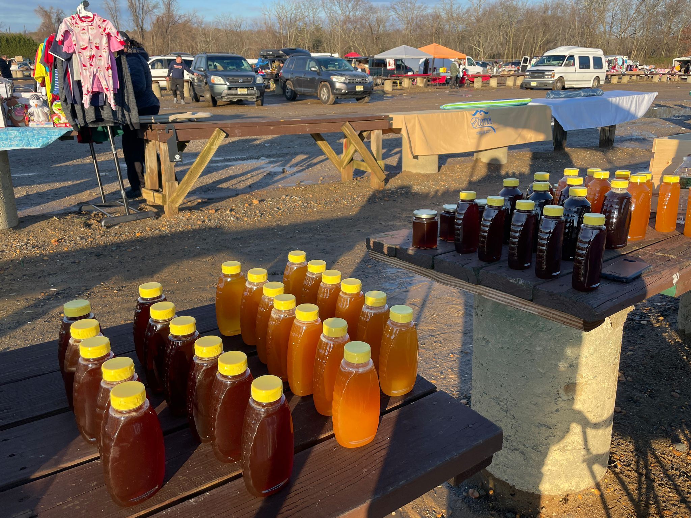

I would've never imaged that BeeKeeping is the path my family would go down. The first time I stood near a beehive, I will admit I was a little nervous. There is something about that steady buzzing that makes you suddenly very aware of your surrondings. Once I actually watched the bees up close, moving with purpose and somehow not crashing into each other, I realized something pretty amazing. This was not chaos. This was a system. A community. A tiny, hardworking world doing something really important.
Bee Kind is here to show you why bees matter so much and what beekeeping is really like behind the scenes. I will walk you through how a hive works, what each bee does, what it takes to care for them, and how honey goes from hive to jar. By the end, you will see that beekeeping is not just a hobby. It is a commitment, a learning experience, and honestly, a little bit addictive.

A beehive is basically the greatest group project where no one slacks off and puts their 100%. Every bee has a role, and they all work together like a well organized team.
The queen bee is the center of it all. Her main job is to lay eggs. That's it. But she does it really well. A healthy queen can lay thousands of eggs a day, which keeps the hive growing and strong.

Worker bees are the real stars of the show! These are all female bees and they do everything you could ever imagine. They clean the hive, feed the larvae, build honeycomb, guard the entrance, and go out to collect nectar and pollen. Their jobs even change as they get older. It is like a full career path in just a few weeks. They are also the majority of the hives population and if you ever run into a bee outside, it is most likely a worker bee.
There are also the drones. Their main job is to mate with the queen. They do not collect nectar or help around the hive, which feels a little unfair, but every hive has its system. Their life ends when they finish mating with the queen. I guess you can say... they went out with a bang.
Seeing how these roles work together makes it clear why bees are so important. They are not just making honey. They are pollinating plants, helping crops grow, and supporting entire ecosystems. Without them, things would get pretty bleak. No pressure, bees. Think of The Bee Movie!
Beekeeping sounds relaxing until you actually try it. Then you realize it takes time, patience, and a willingness to learn from your mistakes.
A typical visit to the hive is not just a quick check up. You have to suit up, light the smoker, and carefully inspect the frames. You are looking for signs that the queen is healthy, that there is enough food, and that the hive is not dealing with pests or disease.

It can be time consuming, especially during warmer months when bees are most active, but it is also really rewarding. You start to recognize patterns in the hive, and you get a feel for how your bees are doing. It is kind of like having thousands of tiny coworkers who do not speak your language but still expect you to show up and do your part.
You might get stung, however that is a part of the process. It is bound to happen. Think of it as the Bees saying "Hey, back up buddy". Fair Enough
Now for the part everyone loves, the honey. But getting that liquid gold is a whole process.
First, beekeepers use a smoker to gently calm the bees. The smoke makes them less defensive, which allows you to work without causing too much stress to the hive. It is basically the beekeeper’s version of saying, “Relax, I won’t hurt you”.
Next, the frames filled with honeycomb are carefully removed from the hive. These frames are where the bees have stored their honey, sealing it with a thin layer of wax.
Then the beekeeper needs to uncap these frames.This means removing that wax layer so the honey can flow out. It is a little messy, but also kind of satisfying.
After that, the frames go into a centrifugal extractor. Th is machine spins the frames and pulls the honey out using force. It sounds fancy, but it is basically a salad spinner for honey.

Once extracted, the honey is filtered to remove bits of wax and other debris. Then it is bottled and ready to enjoy.
And just like that, something that started as flower nectar collected by bees ends up in your kitchen. Not bad for a day’s work. Or a few thousand bees worth of work.
Looking back, that first moment standing near the hive feels completely different now. What once seemed intimidating now feels kind of inspiring. Bees are small, but what they do is huge.
At Bee Kind, you have hopefully learned how a hive functions, what beekeeping really involves, and how honey is made step by step. More importantly, you have seen why bees deserve our attention and care.

As you explore more of this site, we will dive into things like equipment, tips for beginners, and how to support local beekeepers and honey producers. There is always more to learn, and trust me, once you get into it, you will be buzzing with curiosity.
And if you ever find yourself near a hive, maybe you will not just hear noise. Maybe you will hear a story.